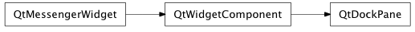
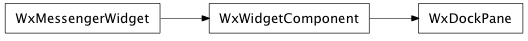

Bases: enaml.widgets.widget_component.WidgetComponent
A widget which can be docked in a MainWindow.
A DockPane is a widget which can be docked in designated dock areas in a MainWindow. It can have at most a single child widget which is an instance of Container.
The title to use in the title bar.
Whether or not the title bar is visible.
The orientation of the title bar.
Whether or not the dock pane is closable via a close button.
Whether or not the dock pane is movable by the user.
Whether or not the dock can be floated as a separate window.
A boolean indicating whether or not the dock pane is floating.
The dock area in the MainWindow where the pane is docked.
The dock areas in the MainWindow where the pane can be docked by the user. Note that this does not preclude the pane from being docked programmatically via the ‘dock_area’ attribute.
A read only property which returns the pane’s dock widget.
An event fired when the user closes the pane by clicking on the dock pane’s close button.
Open the dock pane in the MainWindow.
Calling this method will also set the pane visibility to True.
Close the dock pane in the MainWindow.
Calling this method will set the pane visibility to False.
alias of __NoInterface__

Bases: enaml.qt.qt_widget_component.QtWidgetComponent
A Qt implementation of an Enaml DockPane.
Handle the ‘set_title_bar_visible’ action from the Enaml widget.
Handle the ‘set_title_bar_orientation’ action from the Enaml widget.
Handle the ‘set_allowed_dock_areas’ action from the Enaml widget.

Bases: enaml.wx.wx_widget_component.WxWidgetComponent
A Wx implementation of an Enaml DockPane.
Handle the ‘set_title_bar_visible’ action from the Enaml widget.
Handle the ‘set_title_bar_orientation’ action from the Enaml widget.
Handle the ‘set_allowed_dock_areas’ action from the Enaml widget.